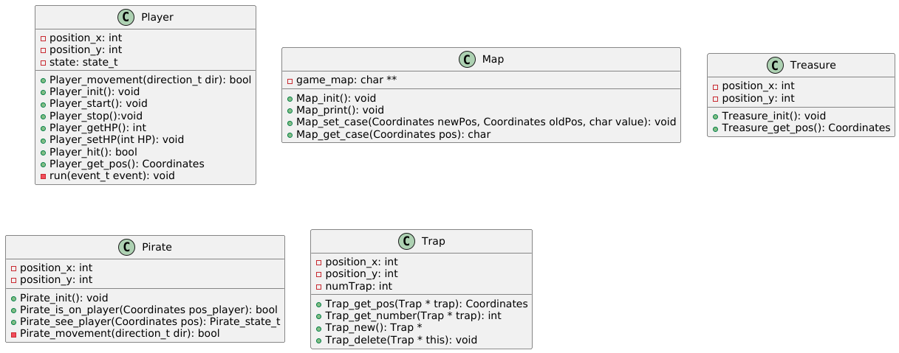

Diagramme class.

Machine à états du jeu.
README
Ce jeu est le jeu du Tresor. Dans ce jeu un joueur se déplace dans une grille qui comporte des pièges, un pirate et surtout un trésor.
Le but du joueur est de trouver le trésor dans la grille, sous mourir ni se faire attraper par le pirate.
Dans la grille les pièges et le trésor sont cachés.
Pour débuter une partie, l'utilisateur doit lancer le jeu en ligne de commande "./game" dans la CLI.
Une fois le jeu lancé, il doit entrer le nombre de pièges qui seront placés dans la grille, il peut placer ente 0 et 20 pièges.
Plus le nombre de pièges est élevé plus la dificulté du jeu sera élévée.
Une fois le nombre de pièges inscrit, l'utilisateur appuie sur la touche "ENTRER" pour valider.
L'appui sur la touche lancera la partie.
Dans la grille affiché dans la CLI.
Le joueur est représenté par un "j".
Le pirate est représenté par un "P".
Lorsqu'une partie est lancée :
A tout moment le joueur peut quitter le jeu en appyuant sur la touche "q" du clavier.
Pour déplacer le joueur l'utilisateur peut utiliser les touches suivante :
"i" -> Déplacement du joueur vers le haut.
"k" -> Déplacement du joueur vers le bas.
"j" -> Déplacement du joueur vers la gauche.
"l" -> Déplacement du joueur vers la droite.
Le joueur a 5 vies (HP).
Lorsqu'un joueur tombe sur un piège il perd 1 HP.
Lorsque le pirate attrape le joueur, le joueur perd 1 HP.
Si le joueur atteint 0 HP, la partie est perdu